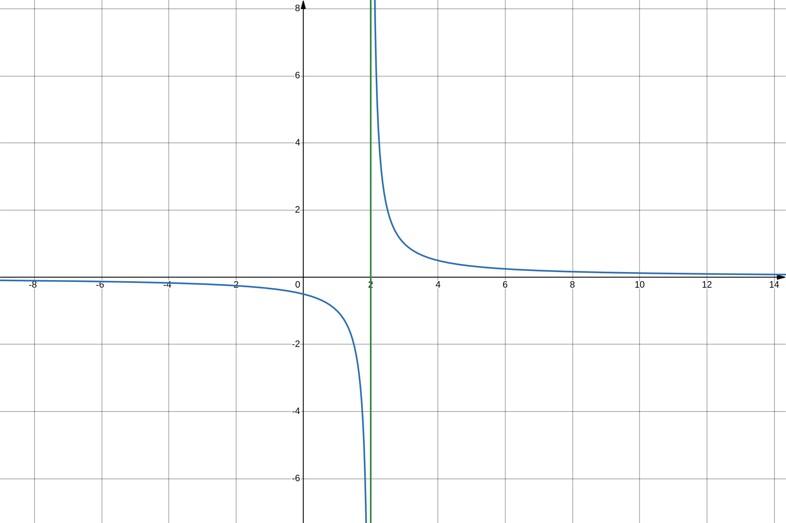
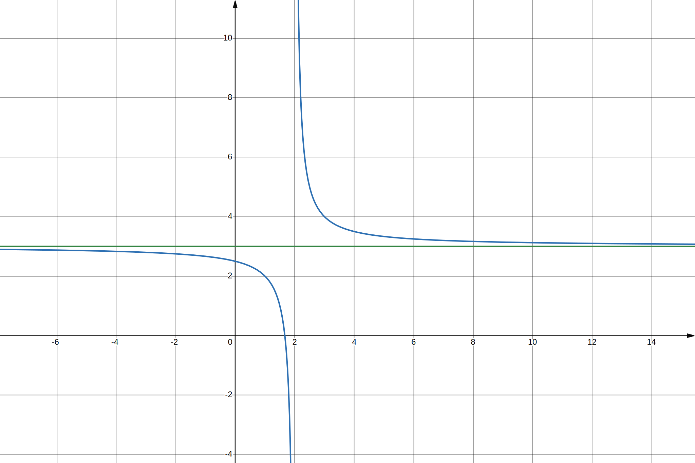
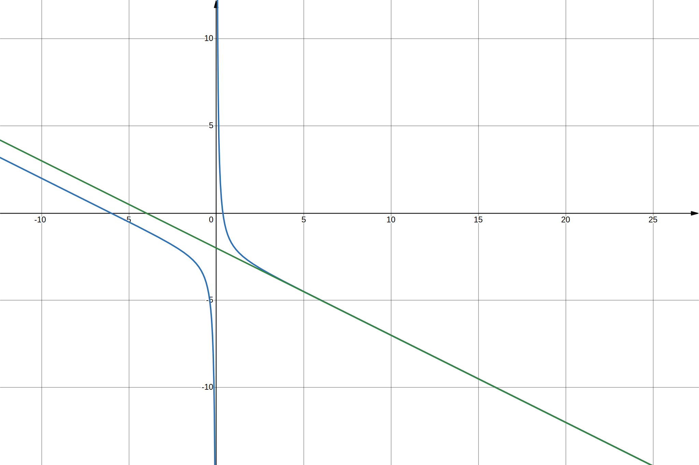

Dans tout ce qui suit, on notera \(C_f\) la courbe représentative d’une fonction \(f\).
Les asymptotes verticales
\(C_f\) admet une asymptote verticale d’équation \(x = x_0\) si
$$
\quad \lim_{x \to x_0} f(x) = \pm \infty
$$

Tracé de la courbe \(y = \frac{1}{(x-2)}\) et de son asymptote verticale
\(x = 2\).
Une fonction peut avoir une limite différente à gauche et à droite de \(x_0\), on notera
alors
$$
\quad \lim_{x \to {x_0}^+} f(x) = \pm \infty
$$
et
$$
\quad \lim_{x \to {x_0}^-} f(x) = \pm \infty
$$
Les asymptotes horizontales
\(C_f\) admet une asymptote horizontale au voisinage de \(+\infty\), d’équation \(y = l\)
(avec \(l \in \mathbb{R}\)) si
$$
\quad \lim_{x \to +\infty} f(x) = l
$$

Tracé de la courbe \(y = \frac{1}{(x-2)} + 3\) et de son asymptote horizontale
\(y = 3\).
\(C_f\) admet une asymptote horizontale au voisinage de \(-\infty\), d’équation \(y = l\)
(avec \(l \in \mathbb{R}\)) si
$$
\quad \lim_{x \to -\infty} f(x) = l
$$
Les asymptotes obliques
\(C_f\) admet en \(+\infty\) une asymptotes oblique d’éqation \(y=ax + b\)
(\(a \in \mathbb{R}\) et \(b \in \mathbb{R}^*\)) si
$$
\quad \lim_{x \to +\infty} (f(x) -(ax+b))= 0
$$

Tracé de la courbe \(y = -\frac{1}{2}x -2 + \frac{1}{(\rm{e}^x-1)}\) et de son
asymptote oblique \(-\frac{1}{2}x -2\).
\(C_f\) admet en \(-\infty\) une asymptotes oblique d’éqation \(y=ax + b\)
(\(a \in \mathbb{R}\) et \(b \in \mathbb{R}^*\)) si
$$
\quad \lim_{x \to -\infty} (f(x) -(ax+b))= 0
$$
Points critiques
Dans ce chapitre on considère une fonction \(f : \mathbb{R} \to \mathbb{R}\).
Recherche des points critiques
Ce sont les points où \(f^\prime(x) = 0\).
Ces points sont les seuls candidats possibles pour des extrema locaux.
Nature des points critiques
Test de la dérivée seconde
Si \(f\) est deux fois dérivable, alors :
Trouver \(x_0\) tel que \(f^\prime(x_0) = 0\).
Calculer \(f^{\prime\prime}(x_0)\) :
si \(f^{\prime\prime}(x_0) \gt 0\) alors \(f\) présente un minimum local en
\(x_0\)
si \(f^{\prime\prime}(x_0) \lt 0\) alors \(f\) présente un maximum local en
\(x_0\)
si \(f^{\prime\prime}(x_0) = 0\) alors il faut utiliser une autre méthode
Test du signe de \(f^\prime\)
Si \(f^{\prime\prime}(x_0) = 0\) ou bien si \(f\) n’est pas deux fois dérivable, on peut
étudier le signe \(f^\prime(x)\) autour de \(x_0\) :
si \(f^\prime\) passe de négatif à positif en \(x_0\) alors \(f\) présente un minimum
local en \(x_0\)
si \(f^\prime\) passe de positif à négatif en \(x_0\) alors \(f\) présente un maximum
local en \(x_0\)
si le signe de \(f^\prime\) ne change pas alors \(f\) ne présente pas d’extremum
local